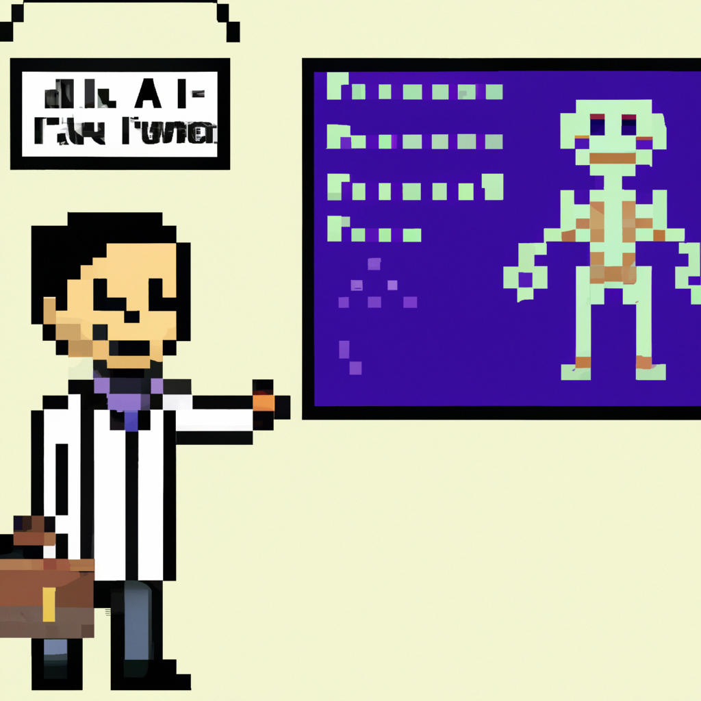

Why AI will definitely replace the radiologist
The debate on whether or not artificial intelligence (AI) will replace the radiologist has been going on for a while now. While AI can provide a valuable tool to aid in the diagnosis of medical images, it is not a silver bullet that will replace the radiologist. AI can provide valuable insights to radiologists, but it cannot replace them.
There are several reasons why AI will never replace the radiologist. For one, AI systems are not yet able to diagnose medical images with the same accuracy as an experienced radiologist. AI systems are still far from being able to match the complexity of the human brain. Furthermore, AI systems are only as good as the training data that is used to teach them. Therefore, the quality of the AI’s decisions depend heavily on the quality of the data that is used to train it.
In addition, AI is not able to match the level of expertise and knowledge that a radiologist brings to the diagnosis. A radiologist’s experience and expertise is invaluable in making accurate diagnoses. AI systems, on the other hand, are limited to the data that they are trained on and cannot match the breadth and depth of experience that a radiologist brings to the table.
Finally, the ethical implications of having an AI system make medical diagnoses cannot be overlooked. AI systems can only be as ethical as the data they are trained on, and it is impossible to guarantee that the data used to train the system is always ethical and responsible. Therefore, we cannot entrust AI systems to make medical decisions without proper oversight.
In conclusion, AI can provide a valuable tool to aid in the diagnosis of medical images, but it is not a silver bullet that will replace the radiologist. AI systems are not yet able to match the complexity of the human brain and cannot match the level of expertise and knowledge that a radiologist brings to the diagnosis. Furthermore, the ethical implications of having an AI system make medical diagnoses cannot be overlooked. Therefore, AI will not replace the radiologist, but will instead complement their work.